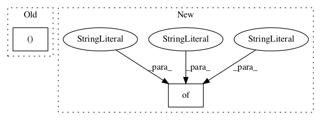

2fe1f942de95b3fe11acb4881c8f18f65d73bd8e,deepexplain/tensorflow/methods.py,,,#,102

Before Change
attribution_methods = {
"zero": (MethodDummyZero, 0),
"one": (MethodDummyOne, 1),
"grad*input": (MethodGradientXInput, 2)
}
@ops.RegisterGradient("DeepExplainGrad")
def deepexplain_grad(op, grad):
After Change
attribution_methods = OrderedDict({
"zero": (DummyZero, 0),
"saliency": (Saliency, 1),
"grad*input": (GradientXInput, 2),
"intgrad": (IntegratedGradients, 3),
"elrp": (EpsilonLRP, 4),
})
@ops.RegisterGradient("DeepExplainGrad")
def deepexplain_grad(op, grad):
In pattern: SUPERPATTERN
Frequency: 3
Non-data size: 2
Instances
Project Name: marcoancona/DeepExplain
Commit Name: 2fe1f942de95b3fe11acb4881c8f18f65d73bd8e
Time:
Author: null
File Name: deepexplain/tensorflow/methods.py
Class Name:
Method Name:
Project Name: f90/Wave-U-Net
Commit Name: fe50c52a31b3231a1777f14eb6131a819f082fc8
Time:
Author: null
File Name: Datasets.py
Class Name:
Method Name: getCCMixter
Project Name: asyml/texar
Commit Name: 49107396aaa0339f1b2dbf43490b9df0417e4675
Time:
Author: null
File Name: texar/modules/memory/memory_network.py
Class Name: MemNetRNNLike
Method Name: default_hparams